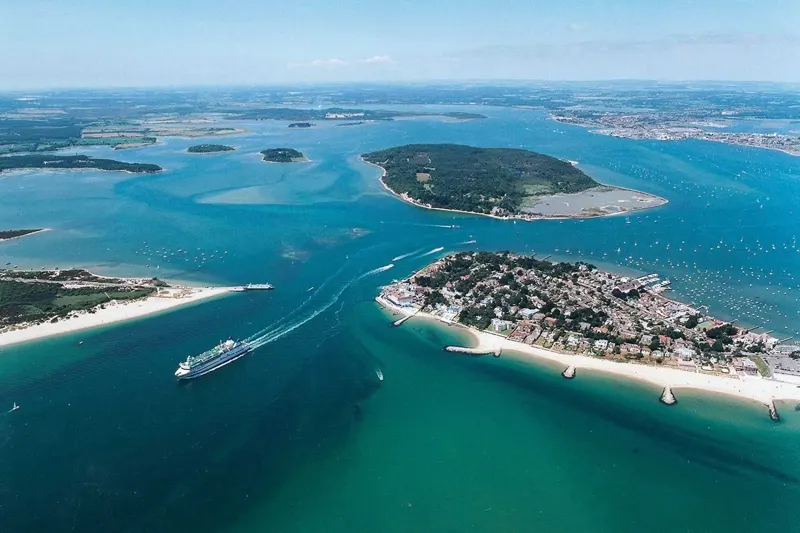
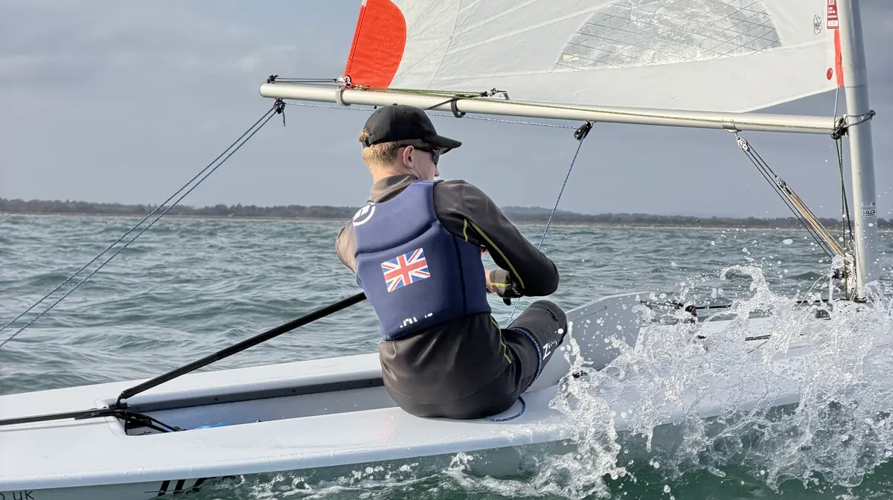
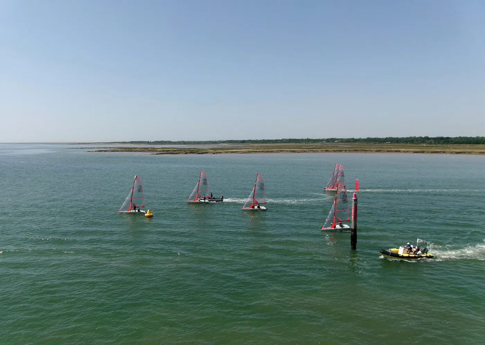
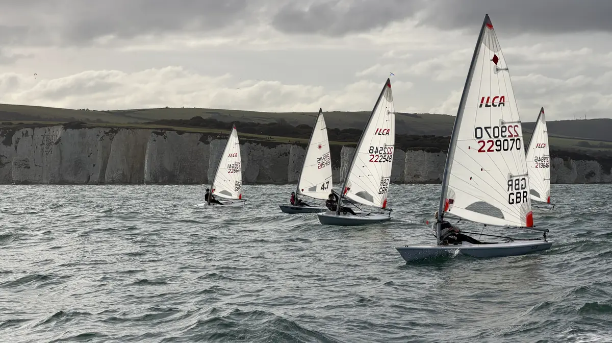
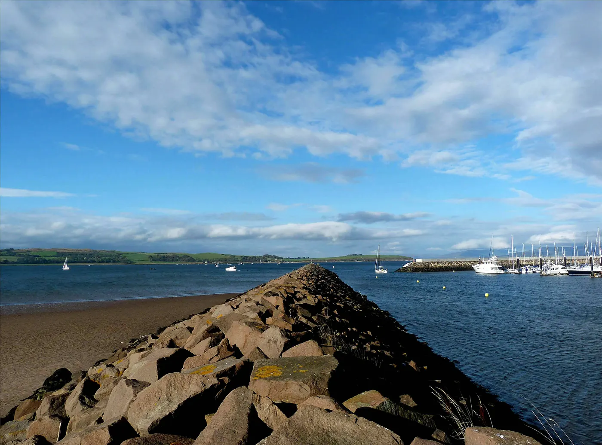

For ILCA 4 and ILCA 6 sailors (and their parents) planning 2027, whether or not Volos is on the list.
James Foster & Kai Wolgram · British Sailing Squad · coaching every camp on this page
One goal
February to August is a long stretch. It's easy to drift through it one event at a time. So this year we've built the whole programme around a single target: the ILCA 6 Youth Worlds in Volos, Greece, from 21 to 29 August 2027.
With a clear goal it's always easier to make progress and take steps in the right direction. Every camp on the way has a reason to be where it is and when it is, and it gives sailors something to focus on through what is quite a long period of time.
Not going to Volos? This is still for you
Plenty of sailors won't be at the Worlds: some aren't ready to move to the ILCA 6 yet, and some simply aren't going. Every camp here is open to ILCA 4 and ILCA 6 sailors, and the coaching is shaped around the sailors who turn up. Volos just gives the summer its direction.
How the pricing works
All of our domestic training is one price per sailor, per day. Volos is £1,450 for the pre-training and the event. On top of that we've lined up a residential and a bulk discount on charter boats, to bring down the other costs of the trip.
The programme
Here's the whole thing on one calendar. Scroll down through the stops and the calendar follows you; tap a bar to jump to that stop. The NEW summer dates are in our full calendar too.
-

Photo: Direct Ferries Stop 1February half-term
- 15–19 Feb
- Poole Yacht Club
- 5 days
Where the summer starts. A five-day block at Poole over the February half-term, and our checkpoint: what we see here shapes the plan for every stop after it.
Make it a longer block: Winter Series #9 (13–14 Feb) and #10 (20–21 Feb) are on the weekends either side.
-
Racing · ILCA UK National Opens
The spring National Opens
- NO1 · 13–14 Mar · WPNSA
- NO2 · 20–21 Mar · WPNSA
- NO3 · 24–25 Apr · Hayling Island SC
Between the February camp and May half-term, the racing is the first three National Opens of 2027. They count towards the national rankings.
Moving up to the ILCA 6 for Volos?To get a place at the Youth Worlds you need a UK national ranking in the ILCA 6, before applications close on 27 April. ILCA 4 sailors should sail one of these three in an ILCA 6. We recommend one of the two March events at WPNSA, so the ranking is in well before the deadline.
-

Photo: James Foster Stop 2 NEWMay half-term
- 29 May – 6 Jun
- Poole Yacht Club
- 9 days
Nine days at Poole across the May half-term: the longest block before Volos, and the first big one of the summer.
We're back at Poole Yacht Club, our base all winter, so the club and the routine are already familiar. Poole Harbour gives us two options: training inside the harbour, on flatter water with the tide running through the channels, or out through the entrance into Poole Bay.
-

Photo: The Portsmouth News Stop 3 NEW VENUE TBCHayling Island
- 12–13 Jun
- Hayling Island SC
- 2 days
Hayling gives us conditions we don't often get at our other venues. There's the chance of longer-period swell, and three quite different places to sail: inside the harbour; out in “the races”, with lots of tide; and in the bay, where tide, swell and chop all come together.
The swell is often offset from the wind, and the breeze can bring some of the cleanest oscillations I've sailed in on the south coast. That makes strategy really count.
-

Photo: ITookSomePhotos, CC BY-SA 4.0 Stop 4 NEW VENUE TBCLymington
- 26–27 Jun
- Royal Lymington YC
- 2 days
Lymington can be a one-dimensional venue at times, but in the right conditions it's one of the best speed venues in the country.
The prevailing wind blows straight up the Solent, and the tide runs either one way or the other along it. So wind and tide are nearly always lined up: either going the same way, or straight against each other. With the tide running against you downwind, the water works like a treadmill: you can sail downwind for a long time without moving far over the ground. That gives us long, unbroken downwind sessions and a rare amount of time to focus purely on downwind technique.
-

Photo: Portland Port Stop 5 NEWWeymouth & Portland
- 2–5 Jul
- WPNSA
- 4 days
We'll be based out of WPNSA, with the conditions everyone is already familiar with, and two options each day: sailing in the harbour or out in the bay.
Weymouth brings a reliable set of conditions, which keeps the number of non-sailing days to a minimum.
-

Photo: James Foster Stop 6 NEWJuly at Poole
- 16–21 Jul
- Poole Yacht Club
- 6 days
Six days back at Poole: the last block at home before we head north to Largs.
Back on the water everyone knows, with the same two options as in May: inside Poole Harbour or out in Poole Bay.
-

Photo: Raibeart MacAoidh, CC BY-SA 2.0 Stop 7 NEWPre-Nationals, Largs
- 3–6 Aug
- Largs SC
- 4 days
Largs is the venue for the ILCA UK Nationals, so we'll be there first. Four days on the water lets sailors get familiar with the venue and its intricacies before the racing starts.
It's the simple things too: settling into a good routine at the venue, off the water, really helps once the championship is under way.
Sat 7 Aug: Nationals registration dayThe day after our camp ends. ILCA UK Open & National Championships, 7–13 August, Largs SC.
-
Photo: Hajotthu, CC BY-SA 3.0, cropped Stop 8 · the goal NEWILCA 6 Youth Worlds, Volos
- 18–29 Aug
- Volos, Greece
- 12 days
- £1,450
Pre-regatta training from 18 August, then coaching support right through the championship, 21 to 29 August, hosted by the Nautical Club of Volos & Argonauts. Entry is by application and capped at 260 youth men and 140 youth women (ILCA event page).
Expect heat. When the same club ran the ILCA 4 Youth Worlds in 2023, racing was mostly in a southeasterly sea breeze, from 7–10 knots up to 14–16, and one day was abandoned in extreme heat. Hydration, food and the routine between races will matter as much as boat speed, which is exactly what the RIB support is for.
How we'll run Volos
Kai and I are finishing an information document on how we'll run the Worlds and how events like this usually work, so parents know exactly what to expect. Here's what we can tell you now.
The event
The ILCA 6 Youth Worlds run from 21 to 29 August. The first three days (21–23) are registration, measurement and the opening ceremony; then there are six days of racing (24–29). Racing is split into a qualifying series and a finals series: with good weather, three days of each, two races a day, so 12 races are scheduled (Notice of Race).
From experience, the boys will probably be split into three or four fleets and the girls into two, across two course areas. The exact set-up only comes with the Sailing Instructions, which are often amended in the days before or during the event. That's normal.
Getting a place
The Worlds are a restricted-entry event: sailors apply through the ILCA website, and each country's places go out in national ranking order. In recent years the UK hasn't filled its places at the ILCA 6 Youth Worlds, so any British sailor with an ILCA 6 national ranking has been able to go. That's no guarantee for 2027, but we expect the same again.
- 22 FebApplications open
- 27 AprApplications close
- 30 AprFirst entry offers
- 22 JulEntry closes
Once you're offered a place you usually have only a couple of days to pay the $510 entry fee, so keep an eye on your emails around then. Moving up from the ILCA 4? You'll need an ILCA 6 ranking first: see the spring National Opens.
Our coaching: £1,450
From 18 to 29 August: five days of pre-training at the venue, a rest day, then support through all six days of racing. We coach in small groups of about six sailors to a coach.
- Briefings and debriefsBefore and after sailing, every day: the decisions that matter that day and what to carry into the rest of the event. We go to the race committee's coach briefings and pass on anything that changes (course areas, first start, launching order).
- The RIB is your support baseWe watch the racing and give feedback between races, hand out food and drink, tow to and from the racecourse, and keep kit and spares on board.
- Fast between racesQuick feedback, food and water, then set up for the next race as fast as possible, so the time goes on preparing for it.
- One point of contactQuestions for the race officials go through us, and we keep an open line to parents all week.
- Rules and protestsWe know the Racing Rules of Sailing and will guide a sailor through a protest if it comes to that.
- Support before you arriveTravel, the spares to bring and the other things that catch people out at international events, shared months ahead. If we don't know the answer, we'll find it.
- We know how it feelsWe race championships like this ourselves, regularly, as full-time campaigning British Sailing Squad sailors. Six days is a long event: we know the ups and downs a sailor goes through, and we shape how we coach around each sailor.
The residential
We're planning it as a residential, so fewer parents need to travel. Some parents come as house parents and look after the sailors ashore, with about three or four sailors per house parent, which suits most of the accommodation near the venue. Sharing helps with the cost, but it isn't free: accommodation, airport transfers, food and transport are the main costs.
Charter boats
We recommend every sailor charters a boat rather than bringing one from the UK: we looked at a convoy, and the numbers don't add up. Through our bulk discount, an ILCA can be chartered for the whole of 18–29 August for €975. The official charter is €1,155 for 21–29 August, plus €550 to have the boat from 16–20 August. Charter companies usually take a damage deposit of about €400–€500, refunded in full if nothing is badly damaged.
What comes with a charter boat, and what to bring
Included: hull, spars (boom, carbon bottom and top sections) and foils (rudder and daggerboard).
Bring:
- Sail (numbered, with country code) and battens
- Complete control lines: kicker, downhaul and outhaul
- Deck plate blocks (the front deck plate is fitted, but no blocks)
- Mainsheet and mainsheet block
- Toe strap and toe strap purchase system
- Clew strap
- Bung
- Front daggerboard friction pad (the rear one is fitted, but may be worn) and daggerboard elastic
- Traveller and traveller block
- Mast retainer
- Tiller and tiller extension
Add any spares you'd want if something breaks, and replace anything frayed or worn before you travel. It's worth agreeing spares with other sailors, so the group isn't carrying five of the easy fixes and none of the hard ones (a snapped tiller extension, say).
Getting there
Fly. Thessaloniki (SKG) is the best airport: about 2h45 to Volos by car (4h45 by public transport), with direct flights from London (daily), Bristol, East Midlands, Birmingham, Manchester, Newcastle, Edinburgh and Leeds Bradford. Athens has plenty of direct flights but is about 3h45 away by car. Volos has its own airport, but no direct flights from the UK.
The same two British Sailing Squad coaches, every camp.
Most coaching set-ups can't tell you, months ahead, who will be coaching at a Worlds or what it will cost. We can: it's James and Kai, at every stop on this page, at a price you know now. You know exactly what you're getting, every time, so you can decide whether it's exactly what you want.
Ask us about Volos ↗Other opportunities
Our programme isn't the only good sailing this summer. These are the other events we'd recommend. 2027 dates are provisional until each event publishes them.
-
Training · UK
ILCA UK Skills Week
28 Jul – 1 Aug · WPNSA
A great opportunity, because there's always a very large turnout of sailors. Who will be coaching, though, is never known in advance.
In the calendar -
Racing · Germany
Kiel Week (youth)
24–27 Jun · Kiel
The youth part of Kieler Woche, with the ILCA 4 and ILCA 6 fleets: a really good racing opportunity.
In the calendar -
Racing · Germany
Warnemünde Week
8–11 Jul · Rostock
Sailing conditions similar to Kiel Week, with the added chance of big swells and big winds, though at this time of year they're far from guaranteed. Accommodation is fairly expensive, but there's far more to do for parents, at least enough to fill a couple of days.
In the calendar -
Racing · France
French Nationals
10–13 Jul · France
Held at the same venue as our U21 Europeans a few years back. It's on a lake, which makes for rather tricky sailing conditions. Accommodation in this part of France is hard to find.
In the calendar
Warnemünde or the French Nationals?
The dates overlap, so you'd have to choose between them. There are benefits to both: France for the tricky lake conditions; Warnemünde for Kiel-like conditions, the chance of swell and breeze, and more for parents to do.
Every camp on this page now books online. Pick your camps, or ask us anything in our WhatsApp group.
Book a camp Join the WhatsApp group ↗Keep reading
Written by James Foster (2022 ILCA 7 National Champion) and Kai Wolgram, both British Sailing Squad. About us · Updated 20 Nov 2026